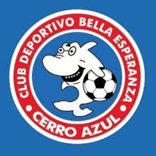

Club Bella Esperanza
El Club Bella Esperanza es una liga deportiva de fútbol originaria del distrito de Cerro Azul, en la provincia de Cañete. Fue fundada el 25 de junio de 1915. A lo largo de los años, el club ha tenido varias participaciones destacadas en torneos nacionales.

Historial Destacado
- 1984: Clasificación a la fase final de la Copa Perú en el Estadio Nacional de Lima.
- 1988: Ascenso a la segunda división bajo el mandato de José Lara Quispe, con apoyo del club Alianza Lima, obteniendo el subcampeonato del torneo de 1997.
- 2002: Pérdida de categoría en el campeonato.
- 2003: Etapa departamental de Lima, llegando a la semifinal.
- 2006: Descenso a la Segunda distrital.
- 2008: Creación de la liga distrital de fútbol de Cerro Azul; clasificación a la etapa provincial.
- 2010: Vuelve a la etapa departamental de la Copa Perú, siendo eliminado en cuartos de final.
- 2015: Coronado campeón de distrito de Cerro Azul y celebración de 100 años de existencia.
Otras Actividades Deportivas
En Cerro Azul, además del fútbol, podemos encontrar una variedad de actividades deportivas que se practican al aire libre, aprovechando los recursos naturales y la belleza del entorno. Algunas de estas actividades son:
- Surf: Las playas de Cerro Azul son perfectas para la práctica del surf, atrayendo a surfistas de todos los niveles.
- Ciclismo en Montaña: Las rutas en los alrededores ofrecen desafíos emocionantes para los ciclistas de montaña.
- Trekking: Senderos escénicos que permiten explorar la naturaleza y disfrutar de vistas panorámicas.
- Fútbol Playa: Actividad popular en las arenas de Cerro Azul, combinando deporte y diversión.
- Natación en el Mar: Las aguas del océano Pacífico son ideales para la natación recreativa y competitiva.
- Motocross: Las pistas y terrenos en Cerro Azul son perfectos para los entusiastas del motocross, ofreciendo aventura y adrenalina.
Disfrutando de la Naturaleza
Practicando estos deportes, podemos apreciar más de los recursos naturales que presenta Cerro Azul. Estas actividades son ideales para personas que buscan salir de su zona de confort y disfrutar de la recreación acompañada de la naturaleza.